Cube
V8/E12/F6 genus 0
Coverage of the remaining tools not in the earlier matrices: 23 shape primitives + 22 operators × 3 modifiers.
Cube → modifier → Select All → tool. PASS = topology changed · PASS-vis = geometry moved (image diff) · NOEFFECT = needs manual pick/gesture · FAIL = error.
| Tool \ Modifier | Verts (1) | Edges (2) | Faces (3) |
|---|---|---|---|
Move/Rotate/Scale move |  NOEFFECT no change (may need manual interaction) |  PASS-vis geometry moved (topology same); fpΔ=7 |  NOEFFECT no change (may need manual interaction) |
Uniform Scale scale |  NOEFFECT no change (may need manual interaction) |  NOEFFECT no change (may need manual interaction) | 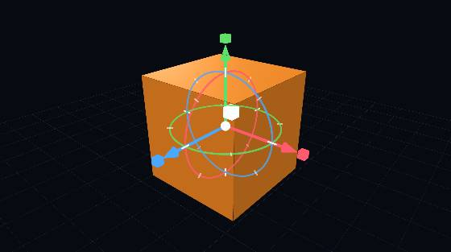 PASS-vis geometry moved (topology same); fpΔ=43 |
Array array | 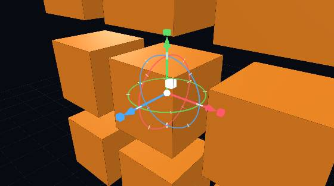 PASS V8/F6->V72/F54 | 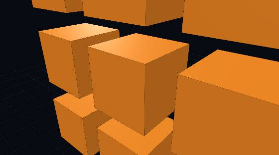 PASS V8/F6->V72/F54 | 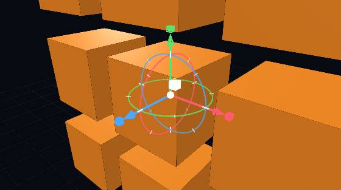 PASS V8/F6->V72/F54 |
Mirror mirror | 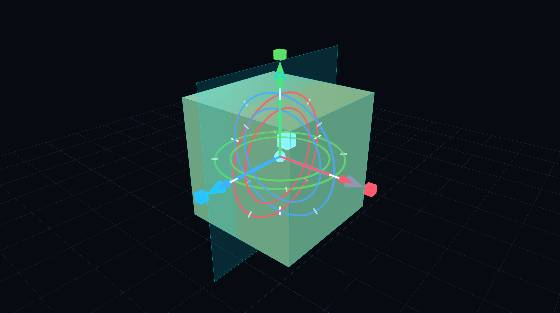 PASS V8/F6->V16/F12 | 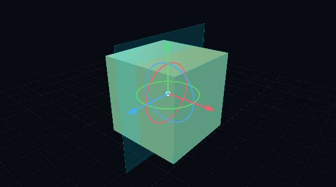 PASS V8/F6->V16/F12 | 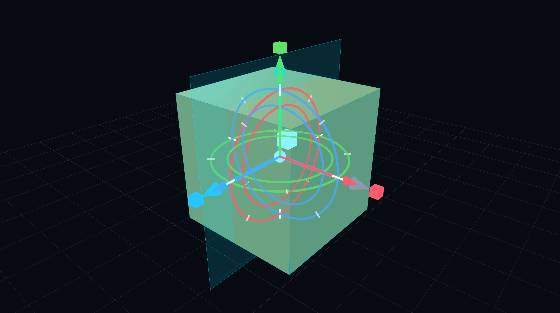 PASS V8/F6->V16/F12 |
Delete Selected deleteSel | 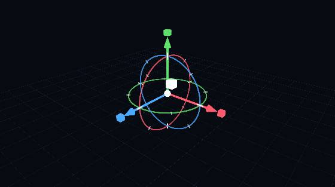 DESTROYS mesh emptied |  NOEFFECT no change (may need manual interaction) |  DESTROYS mesh emptied |
Flip Normals flipNormals |  NOEFFECT no change (may need manual interaction) | 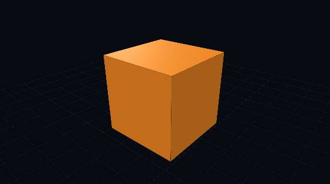 NOEFFECT no change (may need manual interaction) |  PASS-vis geometry moved (topology same); fpΔ=43 |
Heal heal |  NOEFFECT no change (may need manual interaction) |  NOEFFECT no change (may need manual interaction) |  PASS-vis geometry moved (topology same); fpΔ=43 |
Quad Remesh quadRemesh |  NOEFFECT no change (may need manual interaction) |  NOEFFECT no change (may need manual interaction) |  PASS-vis geometry moved (topology same); fpΔ=43 |
Simplify simplify | 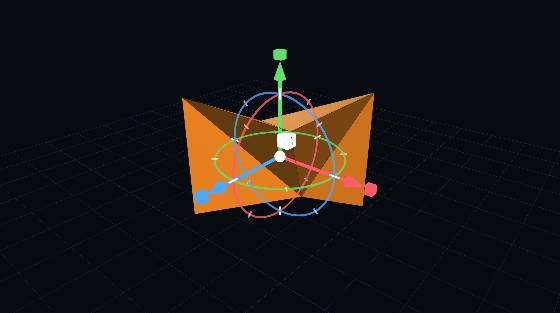 PASS V8/F6->V8/F12 | 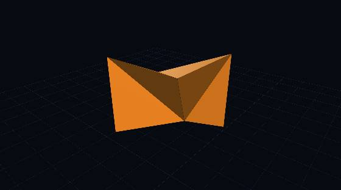 PASS V8/F6->V8/F12 | 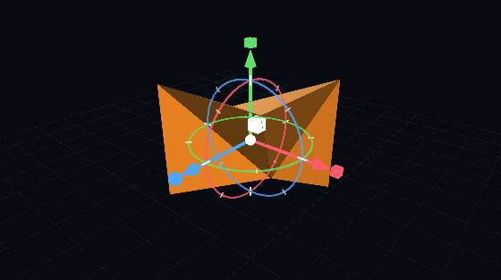 PASS V8/F6->V8/F12 |
Planarize planarize |  NOEFFECT no change (may need manual interaction) |  NOEFFECT no change (may need manual interaction) |  PASS-vis geometry moved (topology same); fpΔ=43 |
Orient to ground orient |  NOEFFECT no change (may need manual interaction) |  NOEFFECT no change (may need manual interaction) |  PASS-vis geometry moved (topology same); fpΔ=43 |
Cut (plane) cut | 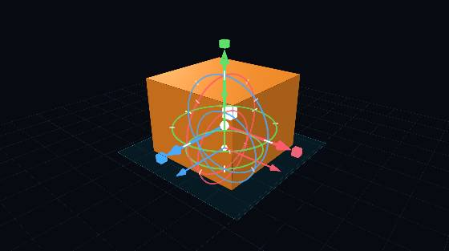 PASS-vis geometry moved (topology same); fpΔ=7 | 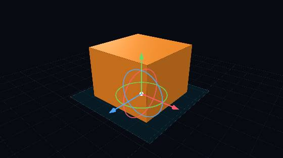 PASS-vis geometry moved (topology same); fpΔ=11 | 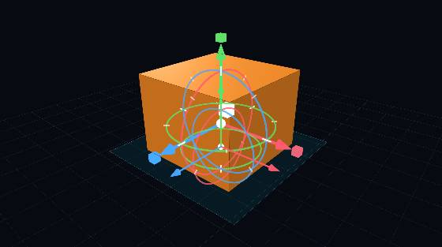 PASS-vis geometry moved (topology same); fpΔ=44 |
Pinch Extrude pinch |  NOEFFECT no change (may need manual interaction) |  NOEFFECT no change (may need manual interaction) | 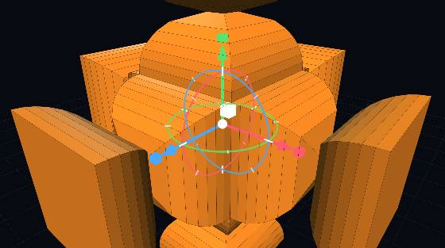 PASS V8/F6->V344/F342 |
Bridge (2 faces) bridge |  NOEFFECT no change (may need manual interaction) |  NOEFFECT no change (may need manual interaction) | NOEFFECT no change (may need manual interaction) |
Pipes pipe | 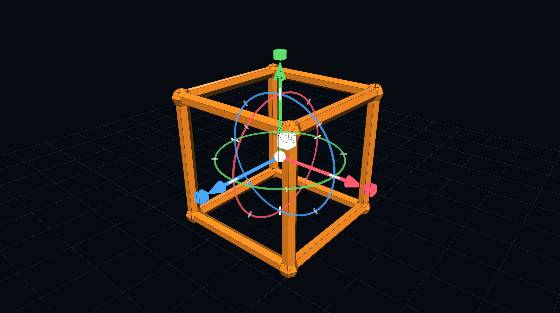 PASS V8/F6->V304/F288 | 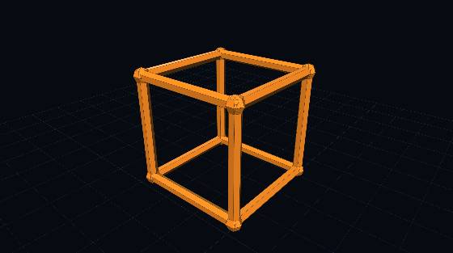 PASS V8/F6->V304/F288 | 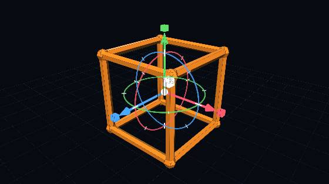 PASS V8/F6->V304/F288 |
Offset Surface offset | 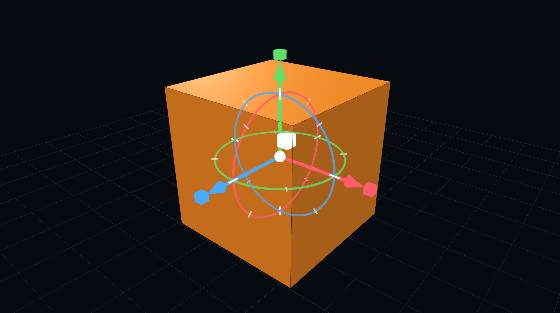 PASS-vis geometry moved (topology same); fpΔ=15 | 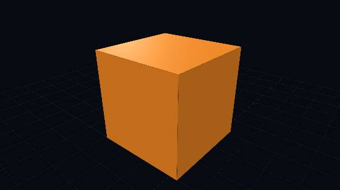 PASS-vis geometry moved (topology same); fpΔ=15 | 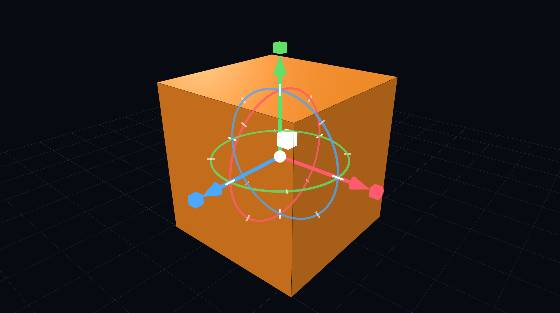 PASS-vis geometry moved (topology same); fpΔ=54 |
Seam sliceEdges |  NOEFFECT no change (may need manual interaction) |  NOEFFECT no change (may need manual interaction) |  PASS-vis geometry moved (topology same); fpΔ=43 |
Paper/Unfold (Slab) slab |  FAIL JS error | 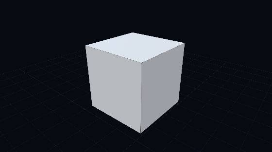 FAIL JS error |  FAIL JS error |
Gyroid gyroid |  PASS V8/F6->V69/F96 | 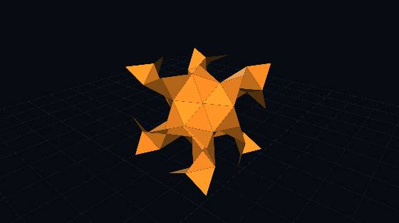 PASS V8/F6->V69/F96 | 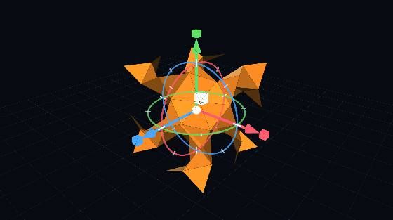 PASS V8/F6->V69/F96 |
Sierpinski sierpinski |  PASS V8/F6->V34/F64 | 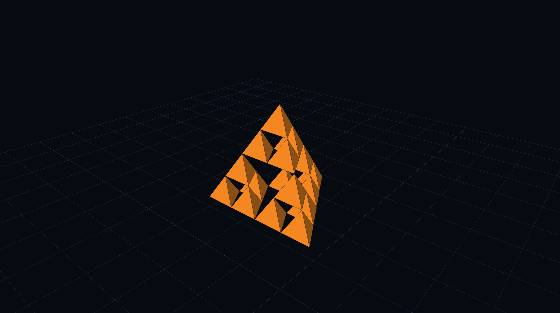 PASS V8/F6->V34/F64 | 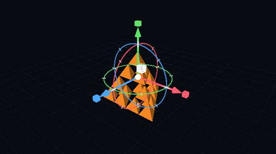 PASS V8/F6->V34/F64 |
Schoen Hybrid hybrid |  PASS V8/F6->V960/F192 | 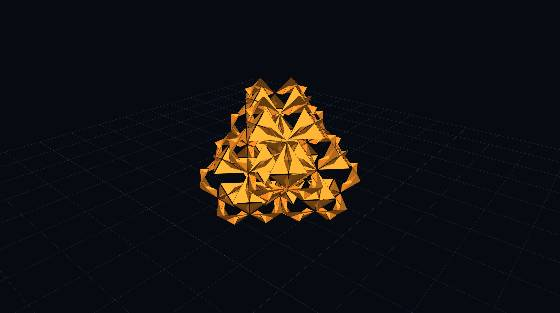 PASS V8/F6->V960/F192 | PASS V8/F6->V960/F192 |
Lattice (Cage) lattice |  NOEFFECT no change (may need manual interaction) | NOEFFECT no change (may need manual interaction) | NOEFFECT no change (may need manual interaction) |